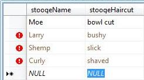
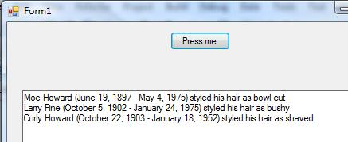
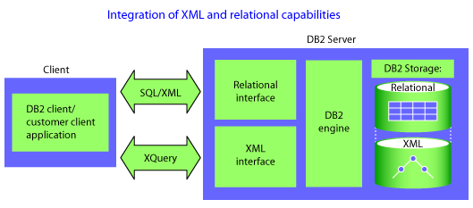

vol. 13 no. 2, June 2008
vol. 13 no. 2, June 2008 | ||||
"Query" "search" - What's the difference?
Search is accomplished by submitting a query to an information store. Query structures your search in accordance with the structure of an information store. To illustrate, suppose we search for dog in an relational database (using SQL: structured query language) and an XML document (using XPath):
SQL: SELECT * FROM book WHERE title = "dog"
XML: /book[@title = "dog"]/*
These two different query structures perform identical searches. They illustrate how the architecture of a particular storage medium intrudes into application programming demanding an awareness that now I'm querying a database or now I'm querying an XML document.
This promotes the paradigm that there are at least two worlds: a database world and an XML world.
Using LINQ means that you no longer live in a database world or an XML world.
Charles Bachman's "The programmer as navigator". (Communications of the ACM, 6(11), 653-8) described the database programmer as navigating among database records by targeting information keys and secondary keys. Here query expressed the link structure among database records.
Ted Codd's "A relational model of data for large shared data banks" (Communications of the ACM, 13(6), 377–387) introduced the table metaphor as data structure. Relational database required the development of SQL: structured query language. Here query expressed a relationship among rows and columns of a table.
Jon Bosak's "The birth of XML: a personal recollection" describes the application of the tree metaphor as a data structure. This led to the development of XPath, a language for selecting nodes by branching from root node to leaf node.
Anders Hejlsberg, chief architect of the C# programming language, introduces LINQ (.Net language-integrated query) at the 2005 Professional Developer's Conference. He describes uniform query across domains such as database, XML and objects, such as arrays - any information store that permits one-by-one access to its contents. A wedge is driven between query and the particular structures of storage media. Inside an integrated development environment such as VS.Net, query becomes a first-class object with intellisense auto-completion and compile-time checking.
If I use a LINQ query, I really don't care how you've structured your information.
Suppose you have an SQL database detailing the Three Stooges and their haircuts:

Suppose you have an XML document detailing the Stooges and their birth and death dates
<?xml version="1.0" encoding="UTF-8"?> <threeStooges> <Stooge> <stoogeName>Moe</stoogeName> <birthDate>June 19, 1897</birthDate> <deathDate>May 4, 1975</deathDate> </Stooge> ... </threeStooges>
Suppose you define an object such as stoogeFacts.
class stoogeFacts
{
public string stoogeName { get; set; }
public string familyName { get; set; }
}
And create an arrray of these objects detailing the names of Stooges:
stoogeFacts[] familyFacts = new stoogeFacts[3];
familyFacts[0] = new stoogeFacts();
familyFacts[0].stoogeName = "Moe";
familyFacts[0].familyName = "Howard";
...
// Target the XML document XDocument xmlSource = XDocument.Load("stooges.xml"); // Target the database stoogeClassesDataContext stoogeContext = new stoogeClassesDataContext(); // The LINQ structure var stoogeGuys = Beginning with the XML source from xmlGuys in xmlSource.Descendants("Stooge") Join to the array on the common element "stoogeName" join arrayGuys in familyFacts on xmlGuys.Element("stoogeName").Value equals arrayGuys.stoogeName Join to the database on the common element "stoogeName" join dbGuys in stoogeContext.stoogeTables on xmlGuys.Element("stoogeName").Value equals dbGuys.stoogeName select new { firstName = dbGuys.stoogeName, familyName = arrayGuys.familyName, birthDate = xmlGuys.Element("birthDate").Value, deathDate = xmlGuys.Element("deathDate").Value, hairCutStyle = dbGuys.stoogeHaircut, };
New hybrid or multi-strucured database management systems have addressed the two-world problem of storage (database? or XML?) by offering both paradigms simultaneously. An example is DB2 Universal Database
To efficiently manage traditional SQL data types and XML data, DB2 includes two distinct storage mechanisms. However, it's important to note that the underlying storage mechanism used for a given data type is transparent to the application. In other words, the application doesn't need to explicitly specify which storage mechanism to use or manage physical aspects of storage, such as splitting portions of XML documents across multiple database pages. It simply enjoys the runtime performance benefits of storing and querying data in a format that's efficient for the target data. "What's new in DB2 Viper" by Cynthia M. Saracco, 09 Feb 2006
Our database heritage comes from deep in the 20th Century. We are used to seeing the architecture of storage media expressed in queries of double-quoted code that are treated differently from surrounding code. LINQ represents a paradigm shift in query and corresponding new flexibility in storage structure abstract those messy details from the logic of our programs.
Date: April 25, 2008
| Find other papers on this subject | ||
|
© the author, 2008.
Last updated: 18 May, 2008 |
|